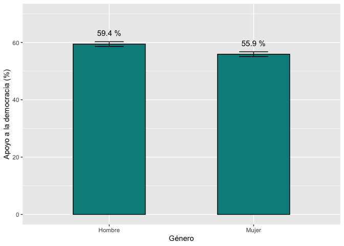
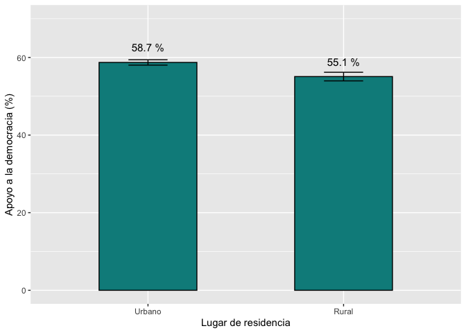

Introducción
En este documento veremos como comparar dos medias y saber si las diferencias se pueden inferir a la población, mediante la prueba t de comparación de medias. Para eso, vamos a seguir usando los últimos reportes “El pulso de la democracia”, del 2021, disponible aquí, y del 2018/19, disponible aquí, donde se presentan los principales hallazgos del Barómetro de las Américas.
En el reporte 2021 se presentan los resultados sobre la victimización por el crimen por grupos de género, edad, educación y riqueza (vr Gráfico 3.12). En el informe de la ronda 2018/19 se reportan los resultados sobre apoyo a la democracia electoral, variable que se cruza con algunas otras variables sociodemográficas como sexo o lugar de residencia (ver Gráfico 1.5).
En esta sección analizaremos los casos cuando la victimización por el crimen se compara entre hombres y mujeres y cuando el apoyo a la democracia se compara entre grupos de género y de residencia urbana o rural.
Sobre la base de datos
Los datos que vamos a usar deben citarse de la siguiente manera: Fuente: Barómetro de las Américas por el Proyecto de Opinión Pública de América Latina (LAPOP), wwww.LapopSurveys.org. En este documento se carga una base de datos recortada. Esta base de datos se encuentra alojada en el repositorio “materials_edu” de la cuenta de LAPOP en GitHub. Se recomiendo limpiar el Environment antes de proceder con esta sección.
Mediante la librería rio y el comando import se puede importar esta base de datos desde este repositorio. Además, se seleccionan los datos de países con códigos menores o iguales a 35, es decir, se elimina las observaciones de Estados Unidos y Canadá.
library(rio)
lapop18 <- import("https://raw.github.com/lapop-central/materials_edu/main/LAPOP_AB_Merge_2018_v1.0.sav")
lapop18 <- subset(lapop18, pais<=35)
También cargamos la base de datos de la ronda 2021.
lapop21 = import("lapop21.RData")
lapop21 <- subset(lapop21, pais<=35)
Victimización por el crimen
La victimización por el crimen está medida con la variable “vic1ext”. La pregunta está fraseada: “Ahora, cambiando de tema, ¿ha sido usted víctima de algún acto de delincuencia en los últimos 12 meses? Es decir, ¿ha sido víctima de un robo, hurto, agresión, fraude, chantaje, extorsión, amenazas o algún otro tipo de acto delincuencial en los últimos 12 meses?”.
Esta variable está codificada como 1 “Sí” y 2 “No. Para poder replicar los resultados del gráfico 3.12 tenemos que recodificar esta variable. Como indicamos en el módulo anterior, esta codificación nos permite calcular el porcentaje de víctimas del crimen mediante el comando mean. El resultado nos indica que el 22% de ciudadanos en la región reporta haber sido víctima del crimen.
library(car)
lapop21$crimen <- car::recode(lapop21$vic1ext, "1=100; 2=0")
mean(lapop21$crimen, na.rm=T)
## [1] 21.92233
El gráfico 3.12 muestra la comparación de la victimización por el crimen cruzada por cuatro variables sociodemográficas: género, edad, educación y quintiles de riqueza.

Para replicar las diferencias entre géneros, se tiene que recodificar la variable “q1tb” y luego declararla como factor.
lapop21$genero = car::recode(lapop21$q1tb, "1=2; 2=1; 3=1")
lapop21$genero = as.factor(lapop21$genero)
levels(lapop21$genero) = c("Mujer", "Hombre")
table(lapop21$genero)
##
## Mujer Hombre
## 31487 29174
De la misma manera que en el documento sobre intervalos de confianza, usamos el comando tapply para calcular el porcentaje de victimización por crimen por grupos de género.
tapply(lapop21$crimen, lapop21$genero, mean, na.rm=T) #Para género
## Mujer Hombre
## 20.87127 23.06949
Para reproducir el gráfico de barras, incluyendo los intervalos de confianza, primero se puede producir una tabla que guarde el valor del porcentaje de cada grupo, así como el valor inferior y superior del intervalo de confianza. Esto se puede hacer con el comando group.CI del paquete Rmisc.
Con esta table, se puede usar la librería ggplot para reproducir el primer panel del gráfico 3.12. Los resultados no son idénticos dado que no se ha usado el efecto de diseño.
library(Rmisc)
crxgen <- group.CI(crimen~genero, lapop21)
library(ggplot2)
graf3.12a <- ggplot(crxgen, aes(x=genero, y=crimen.mean))+
geom_bar(width=0.5, fill="darkcyan", colour="black", stat="identity")+
geom_errorbar(aes(ymin=crimen.lower, ymax=crimen.upper), width=0.2)+
geom_text(aes(label=paste(round(crimen.mean, 1), "%")), vjust=-1.5, size=4)+
xlab("Género") + ylab("Victimización por crimen (%)")+
ylim(0, 40)
graf3.12a

Apoyo a la democracia
El apoyo a la democracia, variable “ING4”, medida en una escala del 1 al 7, donde 1 significa “muy en desacuerdo” y 7 significa “muy de acuerdo”, se tiene que recodificar. De acuerdo al reporte “Se consideran las respuestas en la porción de la escala que indica estar de acuerdo, esto es los valores de 5 a 7, para indicar el porcentaje que apoya a la democracia” (p. 11). Se usa el comando mean para reportar el promedio regional de apoyo a la democracia. Se especifica na.rm=T para que el comando no tome en cuenta los valores perdidos en el cálculo.
library(car)
lapop18$ing4r <- car::recode(lapop18$ing4, "1:4=0; 5:7=100")
mean(lapop18$ing4r, na.rm=T)
## [1] 57.67924
Se observa que en general, el 57.7% de entrevistados apoyo a la democracia en el conjunto de países evaluados en 2018.
Factores asociados al apoyo a la democracia
El gráfico 1.5 muestra cómo varía el apoyo a la democracia por grupos sociodemográficos. En particular, se presenta los resultados para la variable lugar de residencia que distingue el ámbito urbano y rural, y para la variable género, que distingue hombre y mujeres.

Como vimos en la sección sobre intervalos de confianza, se puede calcular el porcentaje de apoyo por cada grupo. En primer lugar, vamos a crear nuevas variables de factor para lugar de residencia y género, que son importadas como variables numéricas. Estas nuevas variables luego se etiquetan.
lapop18$genero <- as.factor(lapop18$q1)
levels(lapop18$genero) <- c("Hombre", "Mujer")
lapop18$ambito <- as.factor(lapop18$ur)
levels(lapop18$ambito) <- c("Urbano", "Rural")
De la misma manera que en el documento sobre intervalos de confianza, usamos el comando tapply para calcular el apoyo a la democracia promedio por grupos de género y de ámbito.
tapply(lapop18$ing4r, lapop18$genero, mean, na.rm=T) #Para género
## Hombre Mujer
## 59.42899 55.90933
tapply(lapop18$ing4r, lapop18$ambito, mean, na.rm=T) #Para urbano-rural
## Urbano Rural
## 58.71664 55.07453
Se puede reproducir los gráficos de barras que comparan el promedio de apoyo a la democracia entre grupos de género y ámbito. Primero, para género, se tiene que crear una tabla con los datos de la media y los límites de los intervalos de confianza para cada grupo. Esto lo haremos con el comando group.CI que es parte de la librería Rmisc. Estos datos los guardamos en un objeto de tipo tabla de R llamado “apxgen”.
Esta tabla guarda los resultados de la media de apoyo a la democracia para cada grupo (columna “ing4r.mean”) y los límites superior e inferior de los intervalos de confianza (columnas “ing4r.lower” y “ing4r.upper”). También guarda la columna “genero” con los nombres de los grupos.
Se reproduce el gráfico 1.5 usando el comando ggplot de la misma manera que en la sección anterior.
library(Rmisc)
apxgen <- group.CI(ing4r~genero, lapop18)
library(ggplot2)
graf1.5 <- ggplot(apxgen, aes(x=genero, y=ing4r.mean))+
geom_bar(width=0.5, fill="darkcyan", colour="black", stat="identity")+
geom_errorbar(aes(ymin=ing4r.lower, ymax=ing4r.upper), width=0.2)+
geom_text(aes(label=paste(round(ing4r.mean, 1), "%")), vjust=-1.5, size=4)+
xlab("Género") + ylab("Apoyo a la democracia (%)")+
ylim(0, 70)
graf1.5

Se puede general un gráfico similar que presente el porcentaje de apoyo a la democracia y los intervalos de confianza por grupos urbano y rural.
apxamb <- group.CI(ing4r~ambito, lapop18)
library(ggplot2)
graf1.5_2 <- ggplot(apxamb, aes(x=ambito, y=ing4r.mean))+
geom_bar(width=0.5, fill="darkcyan", colour="black", stat="identity")+
geom_errorbar(aes(ymin=ing4r.lower, ymax=ing4r.upper), width=0.2)+
geom_text(aes(label=paste(round(ing4r.mean, 1), "%")), vjust=-1.5, size=4)+
xlab("Lugar de residencia") + ylab("Apoyo a la democracia (%)")+
ylim(0, 70)
graf1.5_2

LAPOP Lab generalmente presenta en sus gráficos los intervalos de confianza de cada grupo. Estas barras grises en el reporte sirven como una forma de comparación rápida. Si las barras se traslapan, eso significaría que no habrían diferencias estadísticamente significativas entre los grupos. Por el contrario, si las barras grises no se traslapan, se podría decir que la diferencia entre los grupos es significativa al 95% de confianza. Sin embargo, para comprobar estas observaciones se tiene que calcular una prueba estadística. Cuando la comparación es entre las medias de dos grupos, la prueba estadística apropiada es la prueba t de diferencias de medias. En esta sección estamos asumiendo que podemos tratar a las variables “jc15a” o “ing4r” como variables numéricas, de las que se puede calcular la media y la desviación estándar, aunque estas variables en estricto son de tipo cualitativa nominal.
Prueba t
La prueba t de Student pone a prueba las siguientes hipótesis:
\[
H_0: µ_1 = µ_2
\]
\[
H_a: µ_1 ≠ µ_2
\]
El estadístico de la prueba t se calcula con un error estándar que depende de si las varianzas parecen diferentes o de si las varianzas parecen iguales. Para determinar esta condición, lo primero es calcular una prueba de igualdad de varianzas entre los grupos, llamada prueba de Levene.
\[
H_0: var_1 = var_2
\]
\[
H_a: var_1 ≠ var_2
\]
Resumen
En esta sección hemos descrito y graficado, como apoyo a la democracia, por grupos de otra variable. Partiendo de la comparación de intervalos de confianza, formalizamos esta comparación con una prueba estadística, como la prueba t, para concluir si las diferencias entre grupos son estadísticamente significativas.
Cálculos incluyendo el efecto de diseño
Para victimización por crimen
Para calcular la diferencia de medias incluyendo el factor de expansión se puede usar la librería survey. Este comando requiere una adecuación de la base de datos, de la misma manera que se hizo en este módulo.
lapop21 = subset(lapop21, !is.na(weight1500))
sapply(lapop21, haven::zap_labels)
Una vez adecuada la base de datos, se tiene que definir el diseño muestral con el comando svydesign y guardar este diseño en un objeto, aquí llamado “diseno21”.
library(survey)
diseno21 = svydesign(ids = ~upm, strata = ~strata, weights = ~weight1500, nest=TRUE, data=lapop21)
En primer lugar, se puede calcular la tabla de la media de victimización por crimen para cada valor de la variable género incluyendo el factor de expansión. De la misma manera que se vio en la sección sobre intervalos de confianza, se usa el comando svyby.
crxgen.w <- svyby(~crimen, ~genero, diseno21, svymean, na.rm=T, vartype = "ci")
crxgen.w
Se debe notar que estos resultados son iguales a los presentados en el gráfico 3.12. Con esta tabla se puede proceder a replicar el gráfico de barras del panel izquierdo de ese gráfico, de la misma manera que se realizó arriba en esta sección.
Para el cálculo de la prueba t de diferencia de medias, el paquete survey cuenta con un comando nativo que permite hacer este calculo svyttest. Sin embargo, en este caso no se cuenta con un comando para evaluar la igualdad de varianzas, como el LeveneTest. El comando svyttest es una derivación de un comando más general para modelos lineales generalizados, que asumen igualdad de varianzas. Si se quisiera comprobar este supuesto, se puede hacer de manera manual, tal como se indica en este link. Aquí se va a proceder asumiendo el supuesto. Se observa que el comando regresa resultados muy parecidos al comando sin el efecto de diseño y para todo efecto se llegan a las mismas conclusiones. El p-value es menor a 0.05, por lo que se puede rechazar la H0 de igualdad de medias y afirmar que existe una diferencia en el apoyo a la democracia entre hombres y mujeres en la población, tomando en cuenta el efecto de diseño.
svyttest(crimen~genero, diseno21)
##
## Design-based t-test
##
## data: crimen ~ genero
## t = 4.3654, df = 30282, p-value = 1.273e-05
## alternative hypothesis: true difference in mean is not equal to 0
## 95 percent confidence interval:
## 1.370025 3.602805
## sample estimates:
## difference in mean
## 2.486415
Como el p-value es menor a 0.05, se concluye que existen diferencias entre hombre y mujeres en sus niveles de victimización por el crimen en toda la región.
Para apoyo a la democracia
De la misma manera que en el ejemplo anterior, en primer lugar se define el efecto de diseño y se guarda en un objeto “diseno18”.
library(survey)
diseno18<-svydesign(ids = ~upm, strata = ~estratopri, weights = ~weight1500, nest=TRUE, data=lapop18)
Luego, se usa el comando svyby para calcular la media de apoyo a la democracia por grupos de género.
apxgen.w <- svyby(~ing4r, ~genero, diseno18, svymean, na.rm=T, vartype = "ci")
apxgen.w
Con esta tabla se puede proceder a crear el gráfico de barras, de la misma manera que se realizó arriba en esta sección.
Igual que en el ejemplo anterior, se procede a usar el comando nativo svyttest para evaluar la diferencia de medias de apoyo a la democracia entre hombres y mujeres.
svyttest(ing4r~genero, diseno18)
##
## Design-based t-test
##
## data: ing4r ~ genero
## t = -5.8332, df = 1329, p-value = 6.822e-09
## alternative hypothesis: true difference in mean is not equal to 0
## 95 percent confidence interval:
## -4.672004 -2.320395
## sample estimates:
## difference in mean
## -3.496199
Como el p-value es menor a 0.05, se concluye que sí existen diferencias entre hombre y mujeres en el apoyo a la democracia en toda la región.
